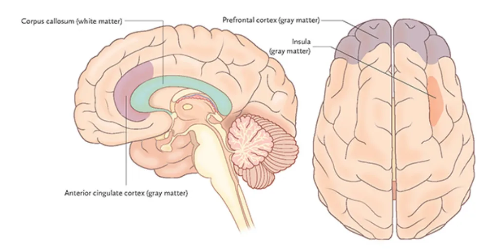
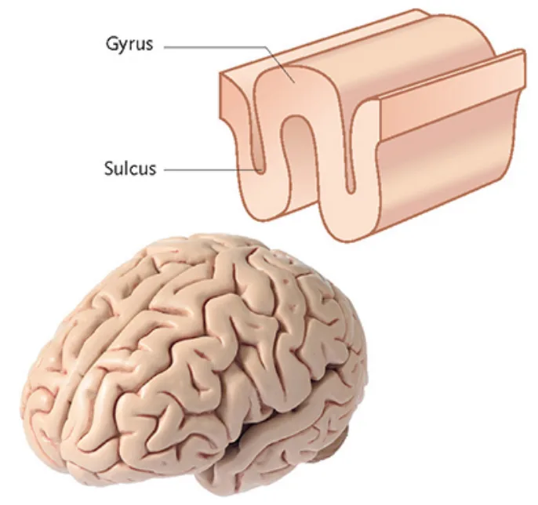
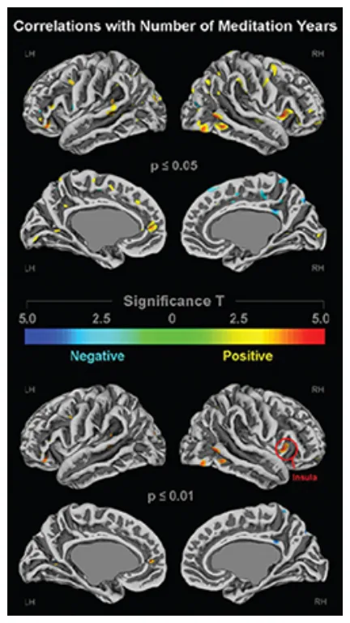
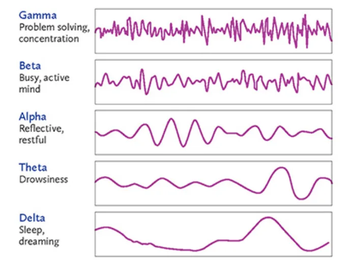

Chương 7 — Thiền định và não bộ
CHƯƠNG 7
Thiền định và Não bộ
Thiền định đã được sử dụng hàng nghìn năm nay để làm dịu và tĩnh lặng tâm trí (Hình 7.1). Mặc dù thiền định có nguồn gốc từ Ấn Độ cổ đại, nhưng nó đã trở thành một phương pháp thực hành phổ biến ở phương Tây. Nhiều nghiên cứu khoa học đã chứng minh hàng loạt lợi ích từ việc thực hành thiền định, chẳng hạn như giảm các triệu chứng căng thẳng, lo âu, trầm cảm và đau đớn, đồng thời cải thiện sức khỏe tinh thần và nhận thức. Chương này sẽ khám phá khoa học về thiền định và thảo luận về cách não bộ tham gia vào phương pháp thực hành chiêm nghiệm này. Không có gì ngạc nhiên khi chúng ta vẫn đang ở ranh giới của việc thấu hiểu não bộ, các nghiên cứu về não bộ và thiền định chỉ ra nhiều hướng đi thú vị khác nhau.

Hình 7.1 Thiền định mang lại nhiều lợi ích cho sức khỏe.
Nguồn: Jared Rice trên Unsplash.
BỐN NHÓM THIỀN ĐỊNH TRONG NGHIÊN CỨU
Để nghiên cứu và so sánh hiệu quả của các phương pháp thực hành thiền định tốt hơn, các nhà nghiên cứu đã phân loại các phong cách thiền thành bốn nhóm chính: 1) thiền tập trung sự chú ý (focused-attention meditation), 2) thiền trì tụng thần chú (mantra recitation meditation), 3) thiền từ bi (loving-kindness meditation) và 4) thiền quan sát mở (open-monitoring meditation) (Fox et al., 2016).
Thiền tập trung sự chú ý đòi hỏi sự tập trung hoặc chú tâm vào một đối tượng hoặc chủ đề cụ thể, chẳng hạn như hơi thở hoặc một hình ảnh quán tưởng, đồng thời tách rời khỏi tâm trí đang lang thang. Hơi thở thường được sử dụng làm đối tượng tập trung. Khi tâm trí bắt đầu tràn ngập suy nghĩ, người thực hành có thể hướng sự chú ý trở lại mục tiêu. Thiền tập trung sự chú ý phát triển kỹ năng kiểm soát sự chú ý, một kỹ năng thiết yếu để hoạt động và phát triển trong cuộc sống hằng ngày. Một số ví dụ về thiền tập trung sự chú ý bao gồm Thiền (Zen), nhìn chằm chằm vào ngọn nến và các bài thiền hơi thở, trong đó sự tập trung được đặt vào hơi thở (Brandmeyer, Delorme and Wahbeh, 2019).
Thiền Shamatha (Chỉ quán / Định) cũng là một phong cách của thiền tập trung sự chú ý. Shamatha có nghĩa là “an trú bình yên” hoặc “tĩnh lặng”, và loại thiền chánh niệm này bắt nguồn từ truyền thống Phật giáo (Owens, 2021). Trong thiền Shamatha, người thực hành trước tiên tập trung vào một đối tượng hoặc hơi thở, và sau đó, khi có kinh nghiệm, họ thiền trong sự chánh niệm về khoảnh khắc hiện tại đồng thời nuôi dưỡng sự chấp nhận đối với các suy nghĩ.
Ví dụ về thiền Shamatha: Hãy ngồi vào một tư thế thoải mái.
Bắt đầu nhận biết hơi thở. Chú ý khi hơi thở đi vào và đi ra khỏi cơ thể. Khi các suy nghĩ xuất hiện trong tâm trí, hãy buông bỏ chúng và quay trở lại với hơi thở. Giữ nguyên trạng thái này, tiếp tục thực hành phương pháp này. Bắt đầu quay trở lại với hơi thở, tập trung vào hơi hít vào và thở ra. Cảm nhận hơi thở được hút vào và sau đó đẩy ra khỏi cơ thể.
Cảm nhận tính chất tuần hoàn của hơi thở. Khi bạn đã sẵn sàng, hãy để hơi thở tạm dừng trong cơ thể vài giây trước khi thả lỏng để thở ra. Hơi thở trở thành một nhịp hít vào, một nhịp giữ hơi và một nhịp thở ra.
Khi hít vào, hãy thử phát ra âm thanh “om”.
Khi giữ hơi thở, hãy tụng âm “ah”. Và khi thở ra, hãy phát ra âm thanh “hung”. Những âm tiết thiêng liêng này giúp mang lại nhiều sự tỉnh thức hơn cho buổi thực hành của bạn và thanh lọc tâm trí.
Phỏng theo với sự cho phép từ: Cách thực hành thiền Shamatha
của Lạt-ma Rod Owens. Từ: https://www.lionsroar.com/how-to-practice-shamatha
Thiền trì tụng thần chú (mantra) bao gồm việc lặp đi lặp lại một âm thanh, từ hoặc cụm từ, thành tiếng hoặc thầm trong đầu để thúc đẩy sự tập trung và ý định. Loại thiền này tương tự như thiền tập trung sự chú ý, ngoại trừ việc đối tượng tập trung mang tính ngôn ngữ hơn là một cảm giác cơ thể như hơi thở. Ngoài ra, vì trọng tâm của thiền trì tụng thần chú là các tín hiệu ngôn ngữ thay vì cảm giác cơ thể, nên có khả năng phong cách thiền này sử dụng các vùng não khác với các phong cách thiền khác (Fox et al., 2016).
Thiền thần chú cũng có thể bao gồm việc người thực hành lần chuỗi hạt mala qua các ngón tay khi họ tụng thần chú. Lý tưởng nhất là câu thần chú không quá dài để có thể dễ dàng lặp lại. Với việc thực hành, sự rung động của âm thanh được cho là mang lại hạnh phúc và bình an thông qua việc cảm nhận sự hiện diện của thứ mà theo truyền thống gọi là shakti – nguồn năng lượng tinh tế bên trong chúng ta mang lại sự tỉnh thức (Moran, 2018).
Một trong những câu thần chú phổ biến nhất được thực hành trên khắp thế giới là việc tụng từ “Om”, được cho là âm thanh của sự sáng tạo vũ trụ. Người ta tin rằng nó chứa đựng mọi rung động đã từng tồn tại hoặc sẽ tồn tại trong tương lai (Moran, 2018).
Ví dụ về thiền thần chú: Hãy ngồi vào một tư thế thoải mái. Nhắm mắt lại nếu bạn cảm thấy dễ chịu.
Và bắt đầu tập trung vào hơi thở. Khi cơ thể đã thư giãn, hãy bắt đầu lặp lại câu thần chú của bạn. Lặp lại câu thần chú một cách chậm rãi và đều đặn, tập trung vào âm thanh của các từ. Tìm một nhịp điệu tự nhiên giữa giọng nói và hơi thở. Bạn có thể lặp lại một phần câu thần chú khi hít vào và phần còn lại khi thở ra. Hoặc nếu câu thần chú ngắn, bạn có thể lặp lại trong cả hai nhịp. Khi bạn đã cảm thấy thoải mái và tự tin với việc phát âm thành tiếng câu thần chú, hãy bắt đầu tụng thầm bên trong, cho chính mình nghe. Nếu các suy nghĩ bắt đầu xâm chiếm tâm trí, chỉ cần quay trở lại với câu thần chú. Quay trở lại với âm thanh. Để câu thần chú trôi đi và quay trở lại với hơi thở của bạn.
Bây giờ, hãy kết nối với chính mình. Bạn đang cảm thấy thế nào?
Thiền từ bi và lòng trắc ẩn tập trung vào việc nuôi dưỡng tình yêu thương, lòng tốt và sự trắc ẩn đối với người khác và bản thân bằng nhiều kỹ thuật tâm trí khác nhau. Những loại thiền này có thể chuyển dịch các khuôn mẫu hành vi và cảm xúc sang những trạng thái tích cực hơn (Brandmeyer, Delorme and Wahbeh, 2019).
Thông thường, khi học phong cách thiền này, tình yêu thương và lòng tốt trước tiên được nuôi dưỡng dành cho một người mà bạn yêu quý. Ở giai đoạn thứ hai, tình yêu thương và lòng tốt được gửi đến chính bạn. Ở giai đoạn thứ ba, những cảm xúc tích cực được gửi đến một người mà bạn có thể gặp khó khăn khi gửi gắm những suy nghĩ yêu thương. Ở giai đoạn cuối cùng, cảm giác yêu thương và lòng tốt có thể được mở rộng ra cho tất cả chúng sinh. Tất nhiên, có nhiều biến thể về cách thực hành thiền từ bi. Một số người thích bắt đầu bằng việc nuôi dưỡng cảm xúc tích cực đối với bản thân rồi mới mở rộng ra bên ngoài. Điều này tùy thuộc vào việc cảm xúc nào dễ tiếp cận nhất đối với người thực hành.
Dưới đây là một ví dụ về bài thiền từ bi nhập môn, trong đó người thiền trước tiên tập trung vào việc nuôi dưỡng tình yêu thương và lòng tốt cho một người họ yêu quý. Sau đó, họ truyền những cảm xúc đó đến một người trung lập.
Không nhất thiết phải đi qua tất cả các giai đoạn trong mỗi buổi thiền. Thay vào đó, việc bắt đầu chậm rãi và từ từ phát triển những cảm xúc tích cực này có thể hữu ích hơn.
Ví dụ về thiền từ bi: Hãy vào một tư thế thoải mái và nhắm mắt lại.
Hít vào một hơi thật sâu và thở ra. Bắt đầu nghĩ về một người gần gũi yêu thương bạn.
Hãy tưởng tượng người đó đang gửi tình yêu thương đến bạn.
Họ mong bạn được an toàn và hạnh phúc. Cảm nhận sự ấm áp tỏa ra từ người đó. Bạn bắt đầu tràn ngập sự ấm áp và tình yêu thương này. Bắt đầu gửi lại sự ấm áp và tình yêu thương này cho người đó.
Chúc họ an toàn và hạnh phúc. Bây giờ, hãy bắt đầu nghĩ về một người quen, một người bạn không biết rõ lắm.
Chọn một người mà bạn không có cảm xúc gì quá mạnh mẽ.
Bắt đầu gửi sự ấm áp và tình yêu thương đến người này.
Chúc họ an toàn và hạnh phúc. Bây giờ hãy quay trở lại với hơi thở, tập trung vào hơi hít vào và thở ra. Hít một hơi thật sâu và thả lỏng. Chớp nhẹ mắt mở ra và quay trở lại với khoảnh khắc hiện tại.
Trong thiền quan sát mở, sự chú ý được đưa về khoảnh khắc hiện tại mà không tập trung vào một đối tượng cụ thể nào (Brandmeyer, Delorme and Wahbeh, 2019). Người thực hành cho phép các suy nghĩ và cảm giác được quan sát mà không phán xét. Những suy nghĩ và cảm giác này có thể mang tính tích cực, trung tính hoặc thậm chí tiêu cực. Nội dung tâm trí không bị suy ngẫm hay kìm nén. Các ví dụ về nhóm thiền này bao gồm thiền chánh niệm và thiền Vipassana.
Thiền chánh niệm là một thuật ngữ chung có thể bao gồm nhiều phong cách thiền khác nhau. Ở mức độ cơ bản, chánh niệm là khả năng hiện diện trọn vẹn trong khoảnh khắc hiện tại. Trạng thái này bao gồm việc nhận biết các suy nghĩ, cảm xúc và cảm giác mà cơ thể và tâm trí bạn đang trải qua. Trong thiền chánh niệm, người thực hành được yêu cầu trải nghiệm khoảnh khắc mà không phán xét. Thay vào đó, họ được khuyến khích nuôi dưỡng sự tò mò, ấm áp và tử tế đối với trải nghiệm của con người.
Thiền chánh niệm trở nên phổ biến ở thế giới phương Tây thông qua các nhà nghiên cứu như Jon Kabat-Zinn, Herbert Benson và Richard Davidson, cùng với Thiền sư Việt Nam Thích Nhất Hạnh (Harrington and Dunne, 2015). Chánh niệm hiện được hàng triệu người thực hành và được đưa vào nhiều chương trình trị liệu đa dạng. Trên thực tế, các can thiệp dựa trên chánh niệm, chẳng hạn như chương trình Giảm căng thẳng dựa trên Chánh niệm (MBSR) của Kabat-Zinn, đã được sử dụng để giúp điều trị nhiều tình trạng bệnh lý, bao gồm lo âu, đau mạn tính và rối loạn giấc ngủ (Goldin and Gross, 2010; Rosenzweig et al., 2010; Carlson and Garland, 2005).
Ví dụ về thiền chánh niệm
Hãy vào một tư thế thoải mái, ngồi hoặc nằm.
Đặt lòng bàn tay ngửa lên nếu bạn cảm thấy thoải mái.
Bắt đầu đưa nhận thức về khuôn mặt của bạn. Chú ý xem có sự căng thẳng nào ở trán, mắt hoặc má của bạn không. Giải tỏa sự căng thẳng này và cảm nhận các cơ đó bắt đầu thư giãn.
Bây giờ, đưa sự tập trung xuống hàm của bạn. Thả lỏng hàm khỏi việc cắn chặt. Cảm nhận các cơ đó thư giãn. Đưa sự chú ý đến cổ, cả phía trước và phía sau.
Hít thở vào các cơ, mời gọi sự thả lỏng. Tiếp tục kỹ thuật quét từng phần cơ thể này cho đến khi bạn chạm tới các ngón chân. Giữ nhận thức về bất kỳ suy nghĩ, cảm xúc hoặc cảm giác nào nảy sinh.
Thiền Vipassana là một trong những hình thức thiền chánh niệm Phật giáo lâu đời nhất (Chiesa, 2010). Phương pháp này sử dụng hơi thở chánh niệm và nhận thức cơ thể để tập trung vào bất cứ điều gì nảy sinh trong khoảnh khắc hiện tại, bao gồm cả suy nghĩ và cảm xúc, theo cách không phán xét thay vì cố gắng kiểm soát trải nghiệm. Mục tiêu là đạt được sự hiểu biết rõ ràng về thực tại. Thiền Vipassana còn được gọi là thiền minh sát hoặc chánh niệm (Emavardhana and Tori, 1997).
Ví dụ về thiền Vipassana: Hãy ngồi vào một tư thế thoải mái. Nhắm mắt lại và bắt đầu thở một cách tự nhiên.
Tập trung vào nhịp điệu tự nhiên của hơi thở. Chú ý cảm giác của hơi thở này khi nó di chuyển vào và ra khỏi cơ thể.
Nhận biết từng hơi hít vào và thở ra. Bắt đầu chú ý xem bạn có bất kỳ suy nghĩ, cảm xúc hay cảm giác nào không.
Quan sát chúng mà không phán xét và để chúng trôi qua.
Nếu bạn bị phân tâm, hãy quay trở lại với hơi thở. Ở lại với hơi thở và tiếp tục quan sát các suy nghĩ, cảm xúc hoặc cảm giác.
Và sau đó buông bỏ chúng.
Thiền Zen (Thiền tông) là một loại thiền quan sát mở khác. Đây là một phương pháp thực hành ngồi thiền của Phật giáo được cho là bắt nguồn từ Trung Quốc vào thời nhà Đường. Phương pháp này bao gồm một nhận thức cởi mở, không định hướng về khoảnh khắc hiện tại, nơi cơ thể, hơi thở và tâm trí được nhìn nhận như một thực thể thống nhất. Những lợi ích lâu dài của thiền Zen bao gồm giảm căng thẳng, cải thiện nhận thức và thay đổi cấu trúc não bộ liên quan đến quá trình xử lý sự chú ý (Pagnoni and Cekic, 2007).
Ví dụ về thiền Zen/Zazen: Hãy ngồi vào một tư thế thoải mái, giữ lưng thẳng và cân bằng. Để hơi thở lưu thông ra vào một cách nhẹ nhàng, không gắng sức. Nếu có thể, hãy khép miệng và để hơi thở đi vào và đi ra qua mũi. Ánh mắt có thể hạ xuống một điểm cách phía trước bạn gần một mét (vài feet). Sự tập trung lúc này hướng về hơi thở. Giải tỏa mọi căng thẳng trong cơ thể bằng cách cảm nhận hơi thở làm thư giãn bản thân. Trải nghiệm trọn vẹn hơi thở. Bạn có thể bắt đầu đếm các nhịp hít vào và thở ra cho đến khi đạt đến mười. Sau đó lặp lại. Nếu tâm trí bắt đầu lang thang, chỉ cần quay trở lại với hơi thở. Hành động quay trở lại với hơi thở này chính là đang phát triển chánh niệm.
Hãy cố gắng kiên nhẫn với chính mình. Chánh niệm sẽ đến cùng với sự thực hành.
GIẢI PHẪU THẦN KINH CỦA THIỀN ĐỊNH
Trong ba thập kỷ qua, các nhà khoa học thần kinh đã nghiên cứu cách thiền định có thể thay đổi cấu trúc não bộ cũng như chức năng não bộ. Mặc dù có nhiều nhóm và phong cách thiền khác nhau, thuật ngữ “thiền định” đôi khi được sử dụng một cách lỏng lẻo trong các bài báo nghiên cứu. Do thiếu sự phân biệt giữa các phong cách, thường rất khó để nhận biết loại thiền nào đang được nghiên cứu! Bất chấp trở ngại này, nhiều nghiên cứu đã được tiến hành về cách thiền định ảnh hưởng đến cấu trúc và chức năng não bộ. Nhiều nghiên cứu sơ bộ trong số này bị hạn chế về cỡ mẫu và/hoặc thiếu nhóm đối chứng, điều này tạo nền tảng cho các nghiên cứu trong tương lai.
Liệu một phong cách thiền có thể mang lại nhiều lợi ích hơn phong cách khác không? Có thể lắm! Nhưng chúng ta chưa biết. Có một khoảng trống lớn trong tài liệu khoa học về việc thử nghiệm và so sánh các phong cách thiền khác nhau. Do đó, hiện tại người ta vẫn biết rất ít về việc liệu một loại thiền có mang lại nhiều lợi ích hơn hoặc dẫn đến nhiều thay đổi trong não bộ hơn loại khác hay không.
THIỀN ĐỊNH ẢNH HƯỞNG ĐẾN CẤU TRÚC NÃO BỘ
Não bộ có thể thích nghi và thay đổi theo trải nghiệm, học tập và hành vi. Những thay đổi này của não có thể xảy ra ở cấp độ tế bào và ảnh hưởng đến mọi thứ, từ chất xám (thân tế bào thần kinh) đến chất trắng (sợi trục thần kinh) của các vùng não khác nhau. Sự ra đời của kỹ thuật chẩn đoán hình ảnh thần kinh đã cho phép các nhà nghiên cứu nhìn vào bên trong não bộ của người thiền định, khám phá xem cấu trúc giải phẫu não nào là đặc trưng cho phương pháp thực hành chiêm nghiệm này.
Một trong những nghiên cứu hình ảnh thần kinh đầu tiên về người thiền định được thực hiện bởi các nhà nghiên cứu tại Bệnh viện Đa khoa Massachusetts, MIT và Trường Y Harvard vào năm 2005. Họ phát hiện ra rằng những người có kinh nghiệm thiền minh sát (insight meditation) sâu rộng có vỏ não dày hơn nhóm đối chứng, bao gồm vỏ não trước trán và thùy đảo (insula) (Lazar et al., 2005). Như đã giải thích trong một chương trước, vỏ não trước trán tham gia vào việc kiểm soát nhận thức, ra quyết định và sự chú ý, trong khi thùy đảo chịu trách nhiệm về nhận thức bản thân và nội cảm (interoception), tức khả năng cảm nhận trạng thái bên trong của cơ thể.
Các nhà khoa học cũng phát hiện ra rằng những người thiền định lớn tuổi và giàu kinh nghiệm cho thấy tình trạng mỏng vỏ não ít hơn (có thể do sự chết đi của các tế bào thần kinh) ở những vùng này so với nhóm đối chứng. Phát hiện của họ cho thấy việc thực hành thiền định thường xuyên có thể bảo vệ thần kinh và thúc đẩy sức khỏe não bộ.
Nghiên cứu này, giống như nhiều nghiên cứu sau đó, bị hạn chế bởi cỡ mẫu nhỏ (20 người tham gia trong trường hợp này). Một trong những hạn chế chính trong nghiên cứu hình ảnh thần kinh là máy chụp cộng hưởng từ cực kỳ đắt đỏ để vận hành. Các nghiên cứu với cỡ mẫu nhỏ vẫn có thể hữu ích, nhưng chúng nên được coi là bước đầu và cần được lặp lại với cỡ mẫu lớn hơn để xác nhận kết quả.
Tổng quan các nghiên cứu hiện tại: sự khác biệt về chất xám và chất trắng. Các bài tổng quan và phân tích gộp (meta-analysis) của tài liệu khoa học này là công cụ quan trọng để hiểu một lĩnh vực vốn bị giới hạn bởi cỡ mẫu nhỏ. Trong một nghiên cứu như vậy, các nhà nghiên cứu từ Đại học British Columbia đã phân tích 21 nghiên cứu giải phẫu thần kinh với tổng cộng khoảng 300 người tham gia (Fox et al., 2014). Các nghiên cứu được xem xét rất đa dạng và bao gồm các phong cách thiền như minh sát, Zen, giảm căng thẳng dựa trên chánh niệm và các loại khác. Khoảng một nửa số nghiên cứu được phân tích đã không liệt kê loại thiền được nghiên cứu hoặc bao gồm những người tham gia thực hành nhiều phong cách thiền, vì vậy các nghiên cứu này được phân loại là “nhiều phong cách” thiền khác nhau.
Không chỉ loại thiền được nghiên cứu rất đa dạng, mà còn có một loạt các kỹ thuật chẩn đoán hình ảnh được sử dụng xuyên suốt các nghiên cứu. Thể tích chất xám và mật độ chất xám là hai phương pháp phổ biến để xem xét số lượng chất xám ở các vùng não khác nhau. Chất xám chứa một số lượng lớn thân tế bào thần kinh cũng như mạch máu, sợi trục không có bao myelin và các tế bào không phải tế bào thần kinh.
Nhắc lại chút… các vùng não lớn hơn có tốt hơn không?
Mặc dù có vẻ như sở hữu các vùng não lớn hơn là tốt hơn, các nhà khoa học thần kinh vẫn chưa hiểu đầy đủ về cách kích thước não ảnh hưởng đến chức năng. Ví dụ, một vùng não lớn hơn có thể có nghĩa là một người có nhiều tế bào thần kinh hơn, nhiều mạch máu hơn hoặc nhiều tế bào nâng đỡ hơn. Ngược lại, một vùng não nhỏ hơn có thể có nghĩa là não của người đó hoạt động hiệu quả hơn, như bộ não của Einstein từng được cho là như vậy (Costandi, 2012).
Các nghiên cứu cho thấy các vùng não lớn hơn, nói chung, có thể là một điều tốt. Sự phát triển nhận thức có liên quan đến các vùng não lớn hơn, trong khi sự chết đi của tế bào não, các bệnh thoái hóa thần kinh và suy giảm nhận thức có liên quan đến các vùng não bị teo nhỏ (Smale et al., 1995).
Một phương pháp phổ biến khác được sử dụng trong các nghiên cứu được xem xét là chụp ảnh khuếch tán (diffusion tensor imaging), giúp làm nổi bật các bó chất trắng (sợi trục) trong não. Các phương pháp khác bao gồm đo độ dày vỏ não và độ cuộn nếp vỏ não (gyrification), vốn là những cách khác để đo lường chất xám (Hình 7.2). Thật không may, khi có quá nhiều kỹ thuật khác nhau được sử dụng, kết quả có thể khó so sánh (Fox et al., 2014). Vì vậy, các nhà nghiên cứu đã tập trung vào những vùng não nổi bật nhất qua tất cả các nghiên cứu.
Các nhà nghiên cứu đã tìm thấy chín vùng não chính có sự khác biệt đáng kể trong ít nhất ba nghiên cứu trở lên được xem xét. Sáu vùng não dường như có liên quan đến việc thực hành thiền định. Chúng bao gồm thùy đảo (nội cảm hoặc cảm nhận trạng thái bên trong của cơ thể), vỏ não cảm giác – vận động (các vùng cảm giác liên quan đến nhận thức cơ thể), vỏ não trước trán (chức năng điều hành/sự chú ý), vỏ não vành đai (cingulate cortex – điều hòa cảm xúc), hồi hải mã (trí nhớ) và thể chai (giao tiếp giữa hai bán cầu não).

Hình 7.2 Sự khác biệt về cấu trúc não bộ ở những người thực hành thiền định.
Thùy đảo liên tục được liên kết với thiền định xuyên suốt các tài liệu hình ảnh thần kinh. Sự khác biệt về cấu trúc não ở thùy đảo của người thiền định cũng là một trong những phát hiện được lặp lại nhiều nhất, theo các tác giả của nghiên cứu (Fox et al., 2014). Thùy đảo gắn liền với sự nhận thức và nội cảm, hai đặc điểm chính của thiền định. Nhận thức bao gồm việc chú ý đến hơi thở và nhịp tim, các trạng thái tâm lý và nhận thức bản thân. Các tác giả lưu ý rằng nhiều nghiên cứu cho thấy sự khác biệt về giải phẫu ở thùy đảo là những nghiên cứu mà người thiền tập trung vào nhận thức cơ thể, chẳng hạn như trong thiền Vipassana hoặc thiền minh sát (Fox et al., 2014). Những phát hiện này cho thấy thiền định có thể dựa vào thùy đảo để cảm nhận trạng thái của cơ thể.
Vỏ não cảm giác – vận động (somatomotor cortices) là các vùng não tham gia vào việc xử lý thông tin xúc giác, chẳng hạn như chạm và đau. Vì người thiền định dường như có nhận thức cơ thể tốt hơn, họ cũng có thể có cảm giác nhạy bén hơn đối với các tín hiệu xúc giác, như sự va chạm. Những người thiền định lâu năm có ngưỡng chịu đau cao hơn những người không thiền, và thiền chánh niệm được sử dụng để giúp giảm đau mạn tính (Liu et al., 2012; Hilton et al., 2016). Những khác biệt về cấu trúc não bộ này có thể là nền tảng cho khả năng giảm cảm giác đau của người thiền định thông qua việc định hướng nhận thức cơ thể và sự chấp nhận (Fox et al., 2014).
Vỏ não trước trán được báo cáo là có cấu trúc khác biệt so với những người tham gia nhóm đối chứng trong ba nghiên cứu được xem xét. Các nghiên cứu này đã khảo sát thiền minh sát, thiền Phật giáo Tây Tạng và thiền Rung động Sóng não (Brain Wave Vibration), vốn đều là những phương pháp thực hành khá khác nhau. Ví dụ, thiền minh sát là một dạng thiền chánh niệm, thiền Phật giáo Tây Tạng bao gồm thần chú và quán tưởng, còn thiền Rung động Sóng não đòi hỏi phải chuyển động đầu, cổ và cơ thể với các bài tập liên quan đến yoga (Bowden, McLennan and Gruzelier, 2014). Vỏ não trước trán có nhiều vai trò đa dạng liên quan đến việc ra quyết định và xử lý cảm xúc. Nó cũng có thể đóng một vai trò trong việc tự giám sát bản thân, vốn là đặc điểm chính của nhiều loại thiền và có thể giải thích tại sao vùng này có cấu trúc khác biệt ở người thiền định so với nhóm đối chứng.
Vỏ não vành đai thường xuyên được xác định trong các nghiên cứu về thiền định. Vỏ não vành đai tham gia vào việc điều hòa cảm xúc và có thể cả việc tự điều chỉnh bản thân. Vì nhiều loại thiền định liên quan đến điều hòa cảm xúc, vùng này có thể khác biệt về mặt giải phẫu ở những người thường xuyên thiền định.
Năm trong số các nghiên cứu được xem xét cho thấy sự khác biệt về cấu trúc não ở hồi hải mã của người thiền định khi so sánh với nhóm đối chứng. Ngoài vai trò trong trí nhớ, hồi hải mã còn tham gia vào việc học tập cảm xúc và căng thẳng. Căng thẳng lặp đi lặp lại kích hoạt tình trạng viêm, làm hồi hải mã ngập trong cortisol. Quá trình này dẫn đến chết tế bào và làm giảm chức năng của hồi hải mã. Rối loạn chức năng hồi hải mã có liên quan đến các bệnh thoái hóa thần kinh, chẳng hạn như bệnh Alzheimer, cũng như nhiều rối loạn tâm thần như lo âu và trầm cảm. Thực hành thiền định thường xuyên có thể bảo vệ vùng này khỏi căng thẳng, vì thiền định nuôi dưỡng khả năng phục hồi và rèn luyện tâm trí trở nên ít phản ứng thái quá hơn trước căng thẳng.
Thể chai (corpus callosum), cầu nối giữa hai bán cầu não, cũng cho thấy một số khác biệt về cấu trúc não ở người thiền định. Đường cao tốc thông tin này được cấu tạo từ các bó chất trắng (sợi trục thần kinh) gửi thông tin qua lại giữa hai nửa (bán cầu) của não bộ. Người thiền định có thể có sự kết nối tốt hơn giữa các vùng não. Các tác giả gợi ý rằng sự gia tăng chất xám (thân tế bào) ở một số vùng có thể đồng nghĩa với việc não cần nhiều chất trắng (sợi trục) hơn để truyền tải những tín hiệu đó khắp não bộ (Fox et al., 2014). Do đó, người thiền định có thể có sự giao tiếp và đồng bộ hóa giữa các vùng não cao hơn so với những người không thiền.
Rất khó để biết liệu thiền định gây ra những thay đổi về cấu trúc não hay chính những khác biệt về cấu trúc não khiến mọi người tìm đến thiền định ngay từ đầu (Fox et al., 2014). Dù sao đi nữa, nhiều nghiên cứu vẫn cho thấy rằng một số vùng não nhất định có sự khác biệt ở những người thiền định. Bản chất nhân quả của mối quan hệ này sẽ cần được khám phá trong các nghiên cứu tương lai.
Những điểm chính cần ghi nhớ
Thiền định thường được phân thành bốn nhóm chính bao gồm: 1) thiền tập trung sự chú ý, 2) thiền trì tụng thần chú, 3) thiền từ bi và 4) thiền quan sát mở. Thực hành thiền định có thể làm thay đổi nhiều cấu trúc não bộ. Một số vùng não phổ biến nhất liên quan đến việc thực hành thiền bao gồm thùy đảo, vỏ não cảm giác – vận động, vỏ não trước trán, vỏ não vành đai, hồi hải mã và thể chai.
Kinh nghiệm thiền định có quan trọng không? Hầu hết các nghiên cứu về giải phẫu thần kinh của thiền định tập trung vào sự khác biệt về chất xám cũng như độ dày vỏ não. Một cách khác để xem xét giải phẫu thần kinh là khảo sát độ cuộn nếp (gyrification) của não (Hình 7.3). Độ cuộn nếp đề cập đến khuôn mẫu và mức độ gấp nếp của vỏ não (Luders et al., 2012). Nói cách khác, đó là thước đo các nếp nhăn trên bề mặt não bộ.
Các nhà khoa học thần kinh tin rằng độ cuộn nếp là một chỉ dấu cho số lượng tế bào thần kinh trong não. Ví dụ, nhiều nếp gấp hơn cho thấy có nhiều chất xám hơn với nhiều tế bào thần kinh hơn. Giả thuyết này được củng cố bởi thực tế là một số loài linh trưởng kém thông minh hơn, chẳng hạn như khỉ rú (howler monkey), có bộ não gần như nhẵn mịn, cho thấy số lượng tế bào thần kinh ít hơn. Ngược lại, bộ não con người chứa đầy các nếp gấp và rãnh não.
Trong một nghiên cứu với 100 người tham gia, các nhà khoa học từ Trường Y Đại học California, Los Angeles và Đại học Jena ở Đức đã kiểm tra độ cuộn nếp vỏ não giữa người thiền định và nhóm đối chứng để xem có bất kỳ sự khác biệt nào về não bộ hay không (Luders et al., 2012). Đáng chú ý, họ phát hiện ra rằng những người thiền định có độ cuộn nếp ở thùy đảo nhiều hơn so với nhóm đối chứng. Họ cũng phát hiện ra rằng những người thiền định có nhiều kinh nghiệm hơn có độ cuộn nếp ở thùy đảo nhiều hơn so với những người thiền định ít kinh nghiệm hơn (Hình 7.4). Những phát hiện này cho thấy thiền định dường như có liên quan đến độ cuộn nếp ở vùng này, đặc biệt là ở những người thiền định lâu năm.

Hình 7.3 Độ cuộn nếp của não bộ.
Phỏng theo: Lobes of the brain, Queensland Brain Institute. Từ:
https://qbi.uq.edu.au/brain/brain-anatomy/lobes-brain

Hình 7.4 Độ cuộn nếp vỏ não có liên quan đến số năm thiền định tại thùy đảo (được đánh dấu màu đỏ).
Nguồn: Luders et al., 2012, xuất bản lần đầu bởi Frontiers, CC BY 4.0. Từ:
https://www.frontiersin.org/articles/10.3389/fnhum.2012.00034/full
Nghiên cứu này là nghiên cứu cắt ngang (cross-sectional), nghĩa là nó chỉ kiểm tra não bộ của người thiền định tại một thời điểm duy nhất. Do đó, không thể xác định được liệu độ cuộn nếp tăng lên của thùy đảo có phải do thực hành thiền định hay không. Thay vào đó, có thể những người có độ cuộn nếp ở thùy đảo nhiều hơn ngay từ đầu đã có xu hướng thực hành thiền định cao hơn (Luders et al., 2012). Mặc dù kết quả có vẻ đầy hứa hẹn, nhưng sẽ cần tiến hành thêm nhiều nghiên cứu để xác nhận những kết quả này.
Để có cái nhìn rõ hơn về cách thiền định lâu dài ảnh hưởng đến cấu trúc não bộ, các nhà nghiên cứu từ Đại học Auckland ở New Zealand đã thực hiện một bài tổng quan, trong đó họ kiểm tra tất cả các nghiên cứu hình ảnh thần kinh so sánh những người thiền định lâu năm với nhóm đối chứng (Luders and Kurth, 2019). Phân tích của họ bao gồm 12 nghiên cứu với những người tham gia có trung bình 10 năm thực hành thiền định.
Bài tổng quan cho thấy những người thiền định lâu năm có các vùng não lớn hơn (nhiều chất xám hơn, độ dày vỏ não lớn hơn, v.v.) so với các nhóm đối chứng ở nhiều khu vực não bộ. Một vài vùng nổi bật trong ba nghiên cứu trở lên với sự khác biệt đáng kể so với nhóm đối chứng là: vỏ não trước trán, thùy đảo và hồi hải mã. Ba vùng này thường được xác định trong các nghiên cứu thiền định nhờ vai trò tương ứng của chúng trong chức năng điều hành, nội cảm và trí nhớ.
Những điểm chính cần ghi nhớ
Độ cuộn nếp là khuôn mẫu và mức độ gấp nếp vỏ não của bộ não, hay bề mặt não trông nhăn nheo như thế nào. Đây có thể là một thước đo số lượng tế bào thần kinh có trong não. Những người thiền định giàu kinh nghiệm cho thấy độ cuộn nếp tăng lên ở thùy đảo khi so sánh với những người thiền ít kinh nghiệm hơn và nhóm đối chứng. Những người thiền định giàu kinh nghiệm cũng có thể có các vùng não lớn hơn so với những người tham gia nhóm đối chứng. Những khu vực này bao gồm vỏ não trước trán, thùy đảo và hồi hải mã.
Làm thế nào một vùng não trở nên lớn hơn? Những khác biệt về não bộ có thể quan sát được bằng các kỹ thuật hình ảnh thần kinh đòi hỏi rất nhiều thay đổi ở cấp độ tế bào. Tuy nhiên, những thay đổi ở cấp độ tế bào này vẫn còn được hiểu rất ít, đặc biệt là ở người.
Các nhà khoa học đã đề xuất một vài khả năng. Ở mô hình chuột, một nghiên cứu phát hiện ra rằng thể tích lớn hơn có tương quan với nhiều sợi trục hơn và sự tái tổ chức sợi trục, cho thấy sự phát triển của vùng não có thể liên quan phần lớn đến các sợi trục (chất trắng) thay vì thân tế bào thần kinh (chất xám) (Fox et al., 2014).
Một số nhà nghiên cứu cho rằng các tế bào thần kinh mới có thể được tạo ra ở những vùng này; tuy nhiên, giả thuyết này có khả năng không chính xác. Quá trình tạo ra các tế bào thần kinh mới trong não được gọi là sự sinh thần kinh (neurogenesis), và nhiều nghiên cứu được thiết kế tốt đã chỉ ra rằng sự sinh thần kinh chủ yếu giới hạn ở hồi hải mã (Kempermann, Song and Gage, 2015). Sự sinh thần kinh không xảy ra ở các vùng như thùy đảo hay vỏ não vành đai.
Một trong những yếu tố hạn chế lớn nhất trong việc tìm hiểu nguyên nhân gây ra những thay đổi hoặc khác biệt về thể tích não là các nhà nghiên cứu không thể giải phẫu não của những người thiền định còn sống. Do đó, không có cách nào trực tiếp để xem thiền định ảnh hưởng đến não bộ ở cấp độ vi mô như thế nào. Ngoài ra, mô hình động vật bị hạn chế trong việc nghiên cứu các phương pháp như thiền định vì chuột nhắt và chuột cống không thể được dạy để thiền. Chúng ta có thể không bao giờ hiểu đầy đủ những thay đổi ở cấp độ tế bào xảy ra do thiền định, nhưng những tiến bộ trong chẩn đoán hình ảnh thần kinh giúp cung cấp một số hiểu biết sâu sắc về những gì có thể đang diễn ra.
THIỀN ĐỊNH ẢNH HƯỞNG ĐẾN CHỨC NĂNG NÃO BỘ
Cho đến nay, chúng ta đã xem xét các khác biệt về mặt cấu trúc, như kích thước não, mật độ và độ cuộn nếp, của não bộ người thiền định so với nhóm đối chứng. Một cách khác để khảo sát não bộ là xem xét sự khác biệt trong cách não bộ hoạt động trong các nhiệm vụ cụ thể, như thiền định. Để phân tích chức năng não, nhiệm vụ phải được thực hiện bên trong máy chụp ảnh não, như máy chụp cộng hưởng từ (MRI). Máy MRI rất hẹp và đòi hỏi bệnh nhân phải nằm phẳng và bất động. Do đó, các bài thực hành vận động như yoga không thể thực hiện bên trong máy chụp MRI để xem xét chức năng não. Tuy nhiên, một người có thể dễ dàng thiền định trong khi các nhà nghiên cứu theo dõi lưu lượng máu đến các vùng khác nhau trong não.
Cùng nhóm các nhà nghiên cứu từ Đại học British Columbia – những người đã thực hiện bài tổng quan và phân tích gộp về giải phẫu thần kinh của thiền định – cũng đã khảo sát các nghiên cứu thiền định liên quan đến chức năng não trong một bài tổng quan thứ hai (Fox et al., 2016). Đối với dự án này, các nhà khoa học đã đưa vào 78 nghiên cứu với tổng số 527 người tham gia.
Xuyên suốt các nghiên cứu được xem xét, thiền tập trung sự chú ý liên tục kích hoạt vỏ não tiền vận động (premotor cortex) và vỏ não vành đai trước (anterior cingulate cortex), vốn có liên quan tương ứng đến kiểm soát nhận thức và tự suy ngẫm. Các nhà khoa học cũng lưu ý rằng, mặc dù không có ý nghĩa thống kê, vỏ não trước trán lưng bên (dorsolateral prefrontal cortex) và thùy đảo cũng được kích hoạt ở mức ngay dưới ngưỡng thống kê (Fox et al., 2016). Vỏ não trước trán lưng bên tham gia vào việc điều hòa sự chú ý, điều này hoàn toàn hợp lý vì thiền tập trung sự chú ý đòi hỏi sự chú ý bền bỉ. Thùy đảo là vùng não liên quan đến nhận thức các cảm giác cơ thể và nội cảm.
Thiền thần chú gắn liền với sự kích hoạt ở nhiều vùng não tham gia vào việc lập kế hoạch và kiểm soát vận động, bao gồm vỏ não trước trán lưng bên, hồi thoi (fusiform gyrus), hồi chêm (cuneus) và hồi trước chêm (precuneus). Các tác giả nêu rõ rằng những vùng này cũng có thể tham gia vào việc tụng một câu thần chú, dù là thành tiếng hay thầm trong đầu (Fox et al., 2016). Điều thú vị là thùy đảo bị giảm hoạt động trong quá trình thiền thần chú, cho thấy nhận thức về cơ thể bị giảm đi khi thực hành thiền thần chú.
Thiền quan sát mở cho thấy sự kích hoạt não bộ ở thùy đảo cũng như ở nhiều vùng liên quan đến vận động tự chủ, chẳng hạn như hồi trán dưới, vùng tiền vận động bổ sung, vùng vận động bổ sung và vỏ não tiền vận động. Đồi thị (thalamus) được ghi nhận là giảm hoạt động trong loại thiền này. Đồi thị là một trạm chuyển tiếp chính trong não để xử lý thông tin cảm giác. Do đó, quá trình xử lý cảm giác có thể được làm dịu bớt trong quá trình thiền quan sát mở.
Cuối cùng, thiền từ bi cho thấy sự kích hoạt ở thùy đảo và các vùng cảm giác bản thể (somatosensory areas) của não. Thùy đảo là vùng não được kích hoạt trong sự đồng cảm, một thành phần cốt lõi của thiền từ bi, trong khi vỏ não cảm giác bản thể xử lý thông tin về các giác quan của chúng ta. Thiền từ bi bao gồm việc nuôi dưỡng những suy nghĩ tích cực, chẳng hạn như niềm vui và lòng trắc ẩn, hướng về người khác và bản thân. Thiền từ bi kích hoạt chính những vùng não tham gia vào các quá trình này.
Một vài vùng não cho thấy sự kích hoạt nhất quán qua cả bốn nhóm phong cách thiền (Hình 7.5). Thùy đảo, vốn tham gia vào nhận thức bản thân và sự đồng cảm, đều góp mặt trong tất cả các phong cách thiền. Thùy đảo có mức độ kích hoạt cao nhất trong thiền quan sát mở và thiền từ bi. Thùy đảo cho thấy ít hoạt động hơn trong thiền thần chú, loại thiền có lẽ đòi hỏi ít sự tập trung vào nhận thức có ý thức về cơ thể hơn vì người thực hành đang tập trung vào câu thần chú.

Hình 7.5 Tóm tắt các vùng kích hoạt và giảm hoạt động qua cả bốn nhóm thiền định. Ba vùng có sự kích hoạt nhất quán trong tất cả các loại thiền là thùy đảo, các trung tâm vận động và vỏ não vành đai.
Nhiều vùng não tham gia vào vận động đã cho thấy sự kích hoạt trong các phong cách thiền khác nhau. Đây là một phát hiện bất ngờ vì các đối tượng tham gia đều nằm bất động trong quá trình chụp ảnh thần kinh. Nghiên cứu gần đây cho thấy một số vùng vận động của não cũng có thể đóng vai trò trong nhận thức và sự chú ý, mặc dù vẫn cần tiến hành thêm nhiều nghiên cứu (Fox et al., 2016). Kết quả cũng cho thấy vỏ não vành đai đóng vai trò trong cả thiền tập trung sự chú ý và thiền quan sát mở. Vỏ não vành đai tham gia vào phản ứng cảm xúc cũng như sự chú ý và có khả năng tham gia vào các bài thiền đòi hỏi sự điều hòa và giám sát.
Những điểm chính cần ghi nhớ
Thiền tập trung sự chú ý gắn liền với sự kích hoạt ở vỏ não tiền vận động và vỏ não vành đai trước. Thiền thần chú liên quan đến sự kích hoạt ở các vùng não tham gia lập kế hoạch và kiểm soát vận động. Thiền quan sát mở cho thấy sự kích hoạt não bộ ở thùy đảo cũng như ở nhiều vùng liên quan đến vận động tự chủ. Thiền từ bi cho thấy hoạt động mạnh hơn ở thùy đảo và các vùng cảm giác bản thể của não. Thùy đảo và vỏ não vành đai có thể đóng một vai trò xuyên suốt tất cả các hình thức thực hành thiền định.
Các mạng lưới não bộ tham gia vào thiền định: Não bộ chủ yếu hoạt động theo các mạng lưới gồm nhiều vùng não, thay vì các vùng đơn lẻ hoạt động độc lập. Một trong những mạng lưới não được kích hoạt thường xuyên nhất là mạng lưới được sử dụng trong thời gian nghỉ ngơi, gọi là mạng lưới trạng thái nghỉ (resting-state networks). Các mạng lưới này hoạt động khi não không tham gia vào một hoạt động hoặc nhiệm vụ cụ thể nào.
Các nhà nghiên cứu từ Đại học Naples đã khảo sát tác động của thiền Vipassana, một loại thiền chánh niệm quan sát mở, lên các mạng lưới não bộ ở trạng thái nghỉ (Lardone et al., 2018). Các nhà khoa học tò mò muốn xem liệu thiền định có thể làm thay đổi cách thức hoạt động nền tảng của một bộ não hay không. Những người tham gia nghiên cứu bao gồm 26 người thiền Vipassana thường xuyên, đã thực hành ít nhất năm ngày mỗi tuần trong ít nhất một năm, và 29 người trong nhóm đối chứng chưa từng thiền bao giờ.
Họ đã sử dụng một kỹ thuật gọi là từ não đồ (magnetoencephalography - MEG), một phương pháp không xâm lấn để đo từ trường tạo ra bởi các dòng điện của tế bào thần kinh. MEG tương tự như điện não đồ (EEG); tuy nhiên, thay vì đo từ trường của các dòng điện ngoại bào (dòng điện bên ngoài tế bào), MEG ghi lại từ trường của các dòng điện nội bào (dòng điện bên trong tế bào) (Singh, 2014).

Hình 7.6 Những người thiền định cho thấy mức độ kết nối cao hơn ở dải sóng theta của hồi hải mã bên phải so với nhóm đối chứng.
Các nhà nghiên cứu phát hiện ra rằng, khi xem xét sóng não từ toàn bộ não bộ, không có sự khác biệt thực sự nào giữa nhóm thiền định và nhóm đối chứng. Tuy nhiên, khi họ bắt đầu so sánh các vùng cụ thể của não, họ quan sát thấy rằng những người thiền định cho thấy mức độ (degree) cao hơn ở dải sóng theta của hồi hải mã bên phải so với nhóm đối chứng (Hình 7.6).
Mức độ cao hơn có nghĩa là hồi hải mã có thể được kết nối nhiều hơn với phần còn lại của mạng lưới nghỉ ngơi hoặc nổi bật hơn ở những người thiền định so với nhóm đối chứng. Các tác giả lập luận rằng phát hiện này cho thấy hồi hải mã đóng một vai trò then chốt trong thiền Vipassana, điều đã được chứng minh trong các nghiên cứu khác khảo sát não bộ của người thiền định (Lardone et al., 2018). Vì phát hiện này chỉ có ở hồi hải mã bên phải, các nhà khoa học suy đoán rằng kết quả này có thể là do hồi hải mã bên phải và bên trái hoạt động theo những cách hơi khác nhau hoặc chúng thể hiện các khuôn mẫu kết nối khác nhau (Lardone et al., 2018).
MẠNG LƯỚI CHẾ ĐỘ MẶC ĐỊNH: Một loại mạng lưới trạng thái nghỉ được gọi là mạng lưới chế độ mặc định (default mode network - DMN). Nó bao gồm các phần của vỏ não trước trán, vỏ não vành đai, thùy thái dương và hồi hải mã, vốn hoạt động khi não không tham gia vào một nhiệm vụ hướng tới mục tiêu. Các vùng này có hoạt động phối hợp với nhau và có xu hướng ít hoạt động hơn trong các nhiệm vụ đòi hỏi nỗ lực nhận thức và sự tập trung. Mạng lưới chế độ mặc định tham gia vào các suy nghĩ liên quan đến bản thân và sự lang thang của tâm trí (Garrison et al., 2015).
Thực hành thiền định có thể làm thay đổi mạng lưới chế độ mặc định. Một nghiên cứu do các nhà nghiên cứu từ Trường Y Đại học Yale thực hiện đã tìm thấy sự suy giảm hoạt động của mạng lưới chế độ mặc định qua cả ba loại thiền, bao gồm thiền tập trung sự chú ý, thiền từ bi và thiền quan sát mở (được các tác giả gọi là nhận thức không lựa chọn) (Brewer et al., 2011). Cùng nhóm các nhà khoa học này sau đó đã lặp lại nghiên cứu với cỡ mẫu lớn hơn, bao gồm 20 người thiền minh sát giàu kinh nghiệm và 26 người đối chứng để xác nhận kết quả trước đó của họ (Garrison et al., 2015). Những người thiền định giàu kinh nghiệm báo cáo có trung bình 10.000 giờ thực hành thiền trong hai năm qua, và nhóm đối chứng chưa từng thiền bao giờ.
Trước khi vào máy quét não MRI, những người thiền định được hướng dẫn thực hiện một trong ba phong cách thiền, bao gồm thiền tập trung sự chú ý, thiền từ bi và thiền quan sát mở. Dưới đây là các ví dụ về hướng dẫn do các tác giả của nghiên cứu cung cấp (Garrison et al., 2015).
1. Tập trung sự chú ý: “Xin hãy chú ý đến cảm giác vật lý của hơi thở ở bất cứ nơi nào bạn cảm nhận rõ nhất trong cơ thể. Theo dõi chuyển động tự nhiên và tự phát của hơi thở, không cố gắng thay đổi nó theo bất kỳ cách nào. Chỉ cần chú ý đến nó. Nếu bạn thấy sự chú ý của mình đã lang thang sang thứ khác, hãy nhẹ nhàng nhưng dứt khoát đưa nó trở lại cảm giác vật lý của hơi thở.” 2. Từ bi: “Xin hãy nghĩ về một lúc nào đó bạn thực sự mong muốn điều tốt đẹp cho ai đó (tạm dừng). Sử dụng cảm giác này làm trọng tâm, hãy thầm chúc tất cả chúng sinh được an lành, bằng cách lặp đi lặp lại một vài cụm từ ngắn do bạn chọn. Ví dụ: Cầu mong tất cả chúng sinh được hạnh phúc, cầu mong tất cả chúng sinh được khỏe mạnh, cầu mong tất cả chúng sinh được bình an vô sự.” 3. Quan sát mở: “Xin hãy chú ý đến bất cứ điều gì đi vào nhận thức của bạn, dù đó là một suy nghĩ, cảm xúc hay cảm giác cơ thể. Chỉ cần theo dõi nó cho đến khi có điều gì khác đi vào nhận thức của bạn, không cố gắng níu giữ hay thay đổi nó theo bất kỳ cách nào. Khi có điều khác đi vào nhận thức của bạn, chỉ cần chú ý đến nó cho đến khi điều tiếp theo xuất hiện.”
Những người thiền định đã có thể thực hành phong cách thiền được hướng dẫn trước khi bước vào máy quét não. Sau đó, những người tham gia bước vào máy quét MRI và thực hiện hai vòng thiền, trong khi các nhà khoa học kiểm tra xem những phần nào trong não của họ đang nhận được nhiều lưu lượng máu nhất.
Nhìn chung, những người thiền định giàu kinh nghiệm báo cáo ít bị lang thang tâm trí hơn so với nhóm đối chứng trong suốt nhiệm vụ thiền. Trong khi thiền, hai khu vực của vỏ não trước trán (hồi thẳng - rectal gyrus và vỏ não trán ổ mắt - orbitofrontal cortex) được quan sát thấy có sự gia tăng hoạt động khi so sánh với mức cơ sở. Những người thiền định cũng cho thấy hoạt động của mạng lưới chế độ mặc định ít hơn khi so sánh với một nhiệm vụ chủ động và lúc nghỉ ngơi. Những phát hiện này ủng hộ ý tưởng rằng người thiền định có thể kiểm soát tốt hơn hoạt động mạng lưới chế độ mặc định của họ và có thể dễ dàng tắt nó đi hơn khi tập trung vào việc thực hành thiền (Garrison et al., 2015).
Thiền thần chú được nghiên cứu ít hơn các hình thức thiền khác, nhưng một số nhà khoa học tin rằng thực hành hình thức thiền này cũng có thể làm thay đổi hoạt động của mạng lưới chế độ mặc định. Các nhà nghiên cứu từ Đại học Linköping ở Thụy Điển đã yêu cầu những người tham gia thực hiện chương trình Kundalini yoga và thiền thần chú kéo dài hai tuần để xem phương pháp thực hành này ảnh hưởng như thế nào đến mạng lưới chế độ mặc định (Simon et al., 2017). Mỗi buổi tập bắt đầu bằng bài tập yoga và kết thúc bằng 11 phút thiền thần chú. Những người tham gia cũng thực hiện động tác gõ ngón tay để cung cấp một nhiệm vụ tập trung sự chú ý làm đối chứng.
Các nhà khoa học phát hiện ra rằng mạng lưới chế độ mặc định của những người tham gia bị ức chế nhiều hơn trong khi thiền so với khi thực hiện gõ ngón tay (Simon et al., 2017). Do đó, thiền thần chú làm giảm sự lang thang của tâm trí bằng cách giảm hoạt động của mạng lưới chế độ mặc định. Phát hiện của họ phù hợp với các nghiên cứu khác vốn nhận thấy thiền tập trung sự chú ý và thiền quan sát mở cũng có tác dụng ức chế lên mạng lưới chế độ mặc định.
Xét đến những kết quả này, thiền định có thể làm giảm bớt suy nghĩ liên quan đến bản thân và sự lang thang của tâm trí bằng cách giảm hoạt động của mạng lưới chế độ mặc định. Một mạng lưới chế độ mặc định hoạt động quá mức có liên quan đến các tình trạng tâm thần kinh, chẳng hạn như trầm cảm và lo âu (Garrison et al., 2015). Vì vậy, cơ chế làm giảm hoạt động của mạng lưới chế độ mặc định thông qua thiền định này có thể là lý do tại sao thiền định được chứng minh là có lợi cho những người mắc các tình trạng này.
Những điểm chính cần ghi nhớ
Mạng lưới trạng thái nghỉ là các vùng não hoạt động khi não không tham gia vào một nhiệm vụ hay hoạt động cụ thể nào. Hồi hải mã của người thiền định có thể hoạt động hơi khác một chút trong lúc nghỉ ngơi so với những người không thiền. Mạng lưới chế độ mặc định hoạt động khi não không tham gia vào một nhiệm vụ hướng tới mục tiêu và bao gồm các vùng phối hợp như vỏ não trước trán, vỏ não vành đai, thùy thái dương và hồi hải mã. Các phong cách thiền tập trung sự chú ý, từ bi, quan sát mở và thần chú đều làm giảm hoạt động của mạng lưới chế độ mặc định, điều được cho là có tác dụng bảo vệ thần kinh.
Hoạt động của não bộ: Điện não đồ (EEG) là một phương pháp phổ biến khác để khảo sát não bộ. Không giống như MRI, vốn là một thước đo gián tiếp lưu lượng máu, EEG phát hiện hoạt động điện của các nhóm lớn tế bào thần kinh trong não. Trong quá trình đo EEG, các điện cực được đặt trên da đầu của một cá nhân trong khi họ thực hiện một nhiệm vụ. EEG có thể là một công cụ hữu ích để hiểu các rối loạn não bộ, chẳng hạn như động kinh, và thường được sử dụng trong nghiên cứu.
EEG đo lường các sóng tín hiệu có tần số, biên độ và hình dạng khác nhau. Có năm loại sóng não chính: sóng gamma, beta, alpha, theta và delta (Hình 7.7).
Nhiều nghiên cứu về thiền định đã kiểm tra não bộ bằng EEG và phát hiện ra sự gia tăng sóng theta gắn liền với việc thực hành này (Brandmeyer, Delorme and Wahbeh, 2019). Sóng theta, có tần số 4–8 Hz, liên quan đến sự thư giãn và chiêm nghiệm hướng nội. Ngoài ra, một số nghiên cứu cho thấy sự gia tăng sóng alpha, loại sóng liên quan đến việc giảm các triệu chứng lo âu và gia tăng cảm giác bình tĩnh. Các nghiên cứu khác lại cho thấy sự gia tăng sóng gamma tần số cao, liên quan đến sự chú ý và tập trung (Brandmeyer, Delorme and Wahbeh, 2019).

Hình 7.7 Đặc điểm của năm loại sóng não chính.
Các nhà khoa học từ Đại học Plymouth ở Vương quốc Anh muốn biết liệu một số phong cách thiền nhất định có cho thấy hoạt động sóng não giống nhau khi so sánh với nhóm đối chứng hay không (Braboszcz et al., 2017). Họ đã sử dụng EEG để kiểm tra sóng não của những người thực hành Vipassana, Himalayan Yoga và Isha Shoonya. Vipassana là một phong cách thiền chánh niệm (thiền ngồi), Himalayan Yoga là một phong cách yoga dựa trên thiền (vận động kết hợp thiền), và Isha Shoonya là một phong cách thiền nhận thức mở (thiền sau khi vận động) (Braboszcz et al., 2013).
Các nhà khoa học phát hiện ra rằng mọi người thiền định đều cho thấy biên độ sóng gamma (60–110 Hz) cao hơn so với nhóm đối chứng trong khi thiền. Hơn nữa, những người thiền định giàu kinh nghiệm hơn cho thấy biên độ sóng gamma thậm chí còn cao hơn những người ít kinh nghiệm hơn. Những phát hiện này phù hợp với một nghiên cứu khác vốn phát hiện những người thiền Vipassana giàu kinh nghiệm hơn, đặc biệt là những người có hơn 10 năm kinh nghiệm, có công suất sóng gamma cao hơn (Cahn, Delorme and Polich, 2009). Nhóm nghiên cứu cũng quan sát thấy rằng những người thiền Vipassana cho thấy hoạt động sóng alpha cao hơn tất cả các nhóm khác trong khi thiền (Braboszcz et al., 2017). Những phát hiện này chứng minh cách thiền định có thể làm thay đổi sóng não để tạo ra trạng thái bình tĩnh và thư giãn, đặc biệt là ở những người có nhiều kinh nghiệm thiền định hơn.
Những điểm chính cần ghi nhớ
Điện não đồ (EEG) phát hiện hoạt động điện của các nhóm lớn tế bào thần kinh trong não. Có năm loại sóng não chính: gamma, beta, alpha, theta và delta. Các nghiên cứu đã cho thấy sự gia tăng sóng theta, alpha và gamma khi thực hành thiền định. Sóng theta gắn liền với sự thư giãn và chiêm nghiệm hướng nội, trong khi sóng alpha liên quan đến cảm giác bình tĩnh, và sóng gamma gắn liền với sự chú ý và tập trung. Những người thiền định giàu kinh nghiệm có hoạt động sóng alpha và sóng gamma cao hơn khi thiền, cho thấy họ có thể trở nên bình tĩnh hơn và tập trung hơn trong quá trình thực hành này so với những người thiền định ít kinh nghiệm hơn.
TÀI LIỆU THAM KHẢO
Bowden, D.E., McLennan, D., & Gruzelier, J., 2014. A randomised controlled trial of the effects of brain wave vibration training on mood and well-being. Journal of Complementary and Integrative Medicine, 11(3), pp.223–232. Braboszcz, C., Cahn, B.R., Balakrishnan, B., Maturi, R.K., Grandchamp, R., & Delorme, A., 2013.
Plasticity of visual attention in Isha Yoga meditation practitioners before and after a 3-month retreat. Frontiers in Psychology, 4. Braboszcz, C., Cahn, B.R., Levy, J., Fernandez, M., & Delorme, A., 2017. Increased gamma brainwave amplitude compared to control in three different meditation traditions. PLoS ONE,
12(1), e0170647. Brandmeyer, T., Delorme, A., & Wahbeh, H., 2019. The neuroscience of meditation: classification, phenomenology, correlates, and mechanisms. Progress in Brain Research, 244, pp.1–29. Brewer, J.A., Worhunsky, P.D., Gray, J.R., Tang, Y., Weber, J., & Kober, H., 2011. Meditation experience is associated with differences in default mode network activity and connectivity. Proceedings of the National Academy of Sciences, 108(50), pp.20254–20259. Cahn, B.R., Delorme, A., & Polich, J., 2009. Occipital gamma activation during Vipassana meditation. Cognitive Processing, 11(1), pp.39–56. Carlson, L.E., & Garland, S.N., 2005. Impact of mindfulness-based stress reduction (MBSR) on sleep, mood, stress and fatigue symptoms in cancer outpatients. International Journal of Behavioral Medicine, 12(4), pp.278–285. Chiesa, A., 2010. Vipassana meditation: systematic review of current evidence. The Journal of
Alternative and Complementary Medicine, 16(1), pp.37–46. Costandi, M., 2012. Snapshots explore Einstein’s unusual brain. Nature. https://doi.org/10.1038/nature.2012.11836 Emavardhana, T., & Tori, C.D., 1997. Changes in self-concept, ego defense mechanisms, and religiosity following seven-day Vipassana meditation retreats. Journal for the Scientific Study of Religion, 36(2), p.194. Fox, K.C.R., Nijeboer, S., Dixon, M.L., Floman, J.L., et al., 2014. Is meditation associated with altered brain structure? A systematic review and meta-analysis of morphometric neuroimaging in meditation practitioners. Neuroscience & Biobehavioral Reviews, 43, pp.48–73. Fox, K.C.R., Dixon, M.L., Nijeboer, S., Girn, M., et al., 2016. Functional neuroanatomy of meditation: a review and meta-analysis of 78 functional neuroimaging investigations. Neuroscience & Biobehavioral Reviews, 65, pp.208–228. Garrison, K.A., Zeffiro, T.A., Scheinost, D., Constable, R.T., & Brewer, J.A., 2015. Meditation leads to reduced default mode network activity beyond an active task. Cognitive, Affective, & Behavioral Neuroscience, 15(3), pp.712–720. Goldin, P.R., & Gross, J.J., 2010. Effects of mindfulness-based stress reduction (MBSR) on emotion regulation in social anxiety disorder. Emotion, 10(1), pp.83–91. Harrington, A., & Dunne, J.D., 2015. When mindfulness is therapy: ethical qualms, historical perspectives. American Psychologist, 70(7), pp.621–631. Hilton, L., Hempel, S., Ewing, B.A., Apaydin, E., et al., 2016. Mindfulness meditation for chronic pain: systematic review and meta-analysis. Annals of Behavioral Medicine, 51(2), pp.199–213. Kempermann, G., Song, H., & Gage, F.H., 2015. Neurogenesis in the adult hippocampus. Cold
Spring Harbor Perspectives in Biology, 7(9), a018812. Lardone, A., Liparoti, M., Sorrentino, P., Rucco, R., Jacini, F., Polverino, A., et al., 2018.
Mindfulness meditation is related to long-lasting changes in hippocampal functional topology during resting state: a magnetoencephalography study. Neural Plasticity, 2018, pp.1–9. Lazar, S.W., Kerr, C.E., Wasserman, R.H., Gray, J.R., Greve, D.N., Treadway, M.T., et al., 2005.
Meditation experience is associated with increased cortical thickness. NeuroReport, 16(17), pp.1893–1897. Liu, X., Wang, S., Chang, S., Chen, W., & Si, M., 2012. Effect of brief mindfulness intervention on tolerance and distress of pain induced by cold-pressor task. Stress and Health, 29(3), pp.199–204. Luders, E., Kurth, F., Mayer, E.A., Toga, A.W., Narr, K.L., & Gaser, C., 2012. The unique brain anatomy of meditation practitioners: alterations in cortical gyrification. Frontiers in Human Neuroscience, 6, p.34. Luders, E., & Kurth, F., 2019. The neuroanatomy of long-term meditators. Current Opinion in
Psychology, 28, pp.172–178.
Moran, S., 2018. The science behind finding your mantra – and how to practice it daily. Yoga
Journal. Available at: https://www.yogajournal.com/yoga-101/mantras-101-the-science-behindfinding-your-mantra-and-how-to-practice-it/ Owens, L.R., 2021. How to practice Shamatha meditation. Lion’s Roar. Available at:
https://www.lionsroar.com/how-to-practice-shamatha/ Pagnoni, G., & Cekic, M., 2007. Age effects on gray matter volume and attentional performance in
Zen meditation. Neurobiology of Aging, 28(10), pp.1623–1627. Rosenzweig, S., Greeson, J.M., Reibel, D.K., Green, J.S., Jasser, S.A., & Beasley, D., 2010.
Mindfulness-based stress reduction for chronic pain conditions: variation in treatment outcomes and role of home meditation practice. Journal of Psychosomatic Research, 68(1), pp.29–36. Simon, R., Pihlsgård, J., Berglind, U., Söderfeldt, B., & Engström, M., 2017. Mantra meditation suppression of default mode beyond an active task: a pilot study. Journal of Cognitive Enhancement, 1(2), pp.219–227. Singh, S.P., 2014. Magnetoencephalography: basic principles. Annals of Indian Academy of
Neurology, 17(5), p.107. Smale, G., Nichols, N.R., Brady, D.R., Finch, C.E., & Horton Jr., W.E., 1995. Evidence for apoptotic cell death in Alzheimer’s disease. Experimental Neurology, 133(2), pp.225–230.